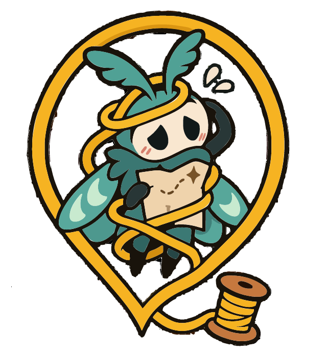

SilksongDecrypted
Randomize Hollow Knight: Silksong and share items with friends in an Archipelago multiworld.
Setup
Pick your role, then tick each step. Progress stays in this browser.
0 / 0
Choose your role to see your steps.
Status
Playtest prerelease v0.5.5-rc.6 targets Silksong 1.0.30000, BepInEx 5.4.23.3, and Archipelago 0.6.8. Built on BatAtVideoGames' randomizer. Use F3 → Playtest → Save Playtest Report to share logs after your run.